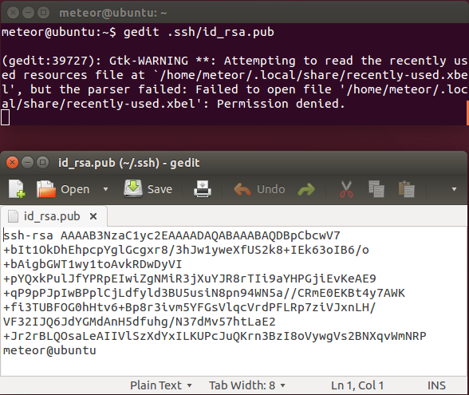
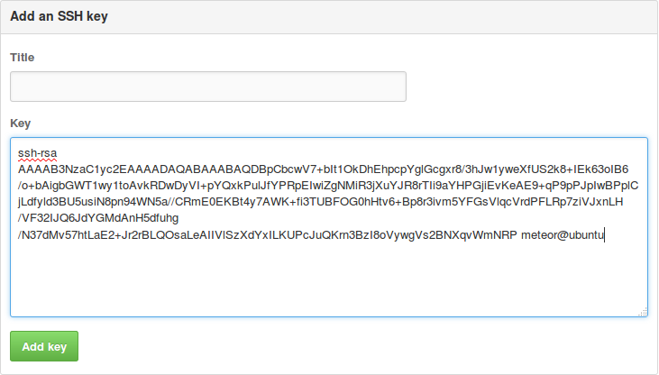

Meteor环境安装指南
本指南主要针对采用Ubuntu开发meteor，并且需要在本地实现部署的用户，配置完毕以后可以通过 mup deploy在本机实现meteor部署。 对于哪些希望在国内服务器上部署的开发者，本文也具备参考意义。
如果是仅需本地开发的用户(包括Ubuntu用户和Mac用户)可以执行官方指令
curl https://install.meteor.com/ | sh
特别说明：基于国内开发者被墙的现状，已经将nodejs和phantomjs两个package提前下载放到script目录下，clone有点慢。
1. 安装配置Ubuntu14.04
首先安装Ubuntu主机，我们推荐采用虚拟机开发，我们在Vmware里安装Ubuntu14.04，用户名是meteor
注意，安装时需要下载的文件尽量skip掉，安装完毕以后可以在比较快的镜像里面下载
2. 启用root用户
可以通过设置root密码的方式来启用root用户
$ sudo passwd root
设置完以后可以试一下su指令，进入root模式，后面很多操作采用root操作

3. 配置源并更新
安装以后通过编辑/etc/apt/sources.list配置源
meteor@ubuntu:~$ sudo gedit /etc/apt/sources.list
对于清华校内的用户，可以采用tuna的源，可以节省对外流量
deb http://mirrors.i.tuna.tsinghua.edu.cn/ubuntu trusty main restricted universe multiverse
deb http://mirrors.i.tuna.tsinghua.edu.cn/ubuntu trusty-security main restricted universe multiverse
deb http://mirrors.i.tuna.tsinghua.edu.cn/ubuntu trusty-updates main restricted universe multiverse
deb http://mirrors.i.tuna.tsinghua.edu.cn/ubuntu trusty-proposed main restricted universe multiverse
deb http://mirrors.i.tuna.tsinghua.edu.cn/ubuntu trusty-backports main restricted universe multiverse
deb-src http://mirrors.i.tuna.tsinghua.edu.cn/ubuntu trusty main restricted universe multiverse
deb-src http://mirrors.i.tuna.tsinghua.edu.cn/ubuntu trusty-security main restricted universe multiverse
deb-src http://mirrors.i.tuna.tsinghua.edu.cn/ubuntu trusty-updates main restricted universe multiverse
deb-src http://mirrors.i.tuna.tsinghua.edu.cn/ubuntu trusty-proposed main restricted universe multiverse
deb-src http://mirrors.i.tuna.tsinghua.edu.cn/ubuntu trusty-backports main restricted universe multiverse
对于北京公网用户而言，经测试，最快的ubuntu镜像是http://mirrors.yun-idc.com/ubuntu/的镜像
deb http://mirrors.yun-idc.com/ubuntu/ trusty main restricted universe multiverse
deb http://mirrors.yun-idc.com/ubuntu/ trusty-security main restricted universe multiverse
deb http://mirrors.yun-idc.com/ubuntu/ trusty-updates main restricted universe multiverse
deb http://mirrors.yun-idc.com/ubuntu/ trusty-proposed main restricted universe multiverse
deb http://mirrors.yun-idc.com/ubuntu/ trusty-backports main restricted universe multiverse
deb-src http://mirrors.yun-idc.com/ubuntu/ trusty main restricted universe multiverse
deb-src http://mirrors.yun-idc.com/ubuntu/ trusty-security main restricted universe multiverse
deb-src http://mirrors.yun-idc.com/ubuntu/ trusty-updates main restricted universe multiverse
deb-src http://mirrors.yun-idc.com/ubuntu/ trusty-proposed main restricted universe multiverse
deb-src http://mirrors.yun-idc.com/ubuntu/ trusty-backports main restricted universe multiverse
随后执行更新指令
meteor@ubuntu:~$ sudo apt-get update -y
meteor@ubuntu:~$ sudo apt-get upgrade -y
4.配置openssh和root的登录
meteor@ubuntu:~$ sudo apt-get install openssh-client openssh-server git -y
meteor@ubuntu:~$ ssh-keygen -t rsa
meteor@ubuntu:~$ su
root@ubuntu:/home/meteor# cd
root@ubuntu:~# mkdir .ssh
root@ubuntu:~# cp /home/meteor/.ssh/id_rsa.pub /root/.ssh/authorized_keys
安装openssh并生成sshkey，
然后再进入root用户的home，创建/root/.ssh/
最后将客户端的id_rsa.pub内容复制到 /root/.ssh/authorized_keys 内，以达到权限认证目的

然后再退出root用户，在重启ssh服务，最后使用root用户连接到本地的ssh里面

5. 配置GitHub账户，并clone本项目
首先登陆github，再进入如下界面 https://github.com/settings/ssh
点击右上角的Add SSH key
然后执行
meteor@ubuntu:~$ gedit .ssh/id_rsa.pub
复制所有内容，黏贴到页面里


然后在命令行执行如下指令下载部署用项目，项目有点大，稍微等一段时间
meteor@ubuntu:~$ git clone git@github.com:wmzhai/setup-meteor-machine.git

6. 安装phantomjs
切换目录，执行如下脚本
meteor@ubuntu:~/setup-meteor-machine/scripts$ cd ~/setup-meteor-machine/scripts
meteor@ubuntu:~/setup-meteor-machine/scripts$ ./install-phantomjs.sh
执行完毕成功了会显示版本号1.9.8

7. 安装nodejs
执行如下脚本
meteor@ubuntu:~/setup-meteor-machine/scripts$ ./install-node.sh
执行完毕成功了会nodejs和npm的版本号

8. 安装mongodb v3
确保网络畅通，执行如下脚本
meteor@ubuntu:~/setup-meteor-machine/scripts$ ./install-mongodb.sh
这一步需要从网上下载文件，需要等一段时间，安装完毕以后输入如下指令验证，一切正常的话会进入mongodb的shell

9. 安装meteor
切换回home路径，执行如下指令安装meteor并新建项目运行
meteor@ubuntu:~$ curl https://install.meteor.com/ | sh

meteor@ubuntu:~$ meteor create hello
meteor@ubuntu:~$ cd hello
meteor@ubuntu:~$ meteor

用浏览器进入http://localhost:3000/ 验证项目正常运行

10. 安装mup
Ctrl-C退出服务器运行
meteor@ubuntu:~/hello$ sudo npm install -g mup

11. mup init
执行mup init生成配置文件
meteor@ubuntu:~/hello$ mup init

然后编辑mup.json如下
{
// Server authentication info
"servers": [
{
"host": "localhost",
"username": "root",
"pem": "~/.ssh/id_rsa"
}
],
// Install MongoDB in the server, does not destroy local MongoDB on future setup
"setupMongo": false,
// WARNING: Node.js is required! Only skip if you already have Node.js installed on server.
"setupNode": false,
// WARNING: If nodeVersion omitted will setup 0.10.36 by default. Do not use v, only version number.
"nodeVersion": "0.10.36",
// Install PhantomJS in the server
"setupPhantom": false,
// Application name (No spaces)
"appName": "hello",
// Location of app (local directory)
"app": ".",
// Configure environment
"env": {
"ROOT_URL": "http://localhost"
},
// Meteor Up checks if the app comes online just after the deployment
// before mup checks that, it will wait for no. of seconds configured below
"deployCheckWaitTime": 15
}
12. mup setup安装环境
再执行mup setup，这个步骤有点久，需要等一段时间
meteor@ubuntu:~/hello$ mup setup

13. mup deploy部署
meteor@ubuntu:~/hello$ mup deploy

项目是被安装到/opt/hello目录下，可以切换目录进去看看

14. 浏览部署结果
最后在浏览器里面打开http://localhost验证是否部署正常